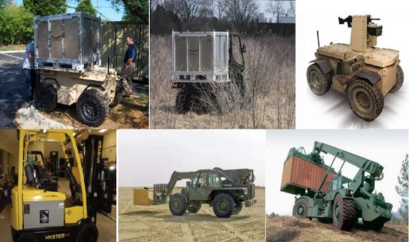

ROBOTICS
Cybernet began its work in the development of robotics technology In the early 1990s.
The technology applied ranges in fields from computer gaming to augmented reality
training to human intention-cued, automated multi-camera surveillance.
Cybernet was an early developer of user interfaces to robotic and computerized
devices based on detection of motion in video and inertial tracker data streams,
recognition of intentional human motion in these motion streams, and conversion
of the human intention into machine control or computer control commands.
technology was popularized in computer gaming by Microsoft through its Kinect
product.
To integrate complex automation systems, Cybernet works with a number of Detroit-based
nontraditional robotics applications and manufacturing companies, allowing us to bring
mature automotive-derived experience to our military customers for tactical and field
applications. Leveraging material handling expertise available from this mature
manufacturing sector, we use our military expertise to modify the designs of various
COTS material handling systems to support our soldiers' needs in the field.

×

MAKING THE FUTURE POSSIBLE
The AMHT kit has demonstrated the ability to reduce the manual labor
required to perform material handling missions,both as an operator
assist capability and as a fully autonomous operation.